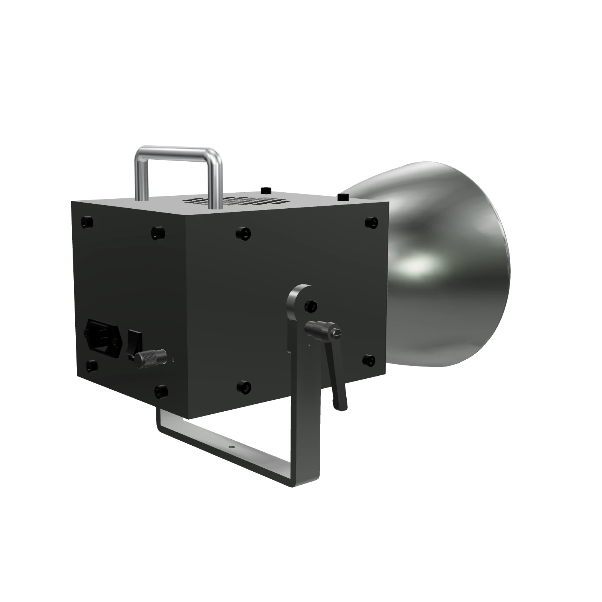

LIGHT STUDY / 001 · MOON I
Savitara · Moon I
A little light changes everything.
The shape. The texture. The feeling.
01 / 03
Light takes shape.
SCROLL TO SHAPE THE LIGHT
Slowly. In either direction.
Slowly. In either direction.
Moon I · By Savitara
Precision you see.
Calm you feel.
Light gives a surface its character. A deliberate highlight. A shadow with depth. Just enough softness to bring the scene together.
Moon I is a studio light shaped around that intention.